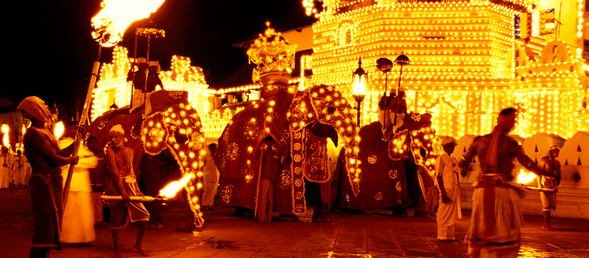
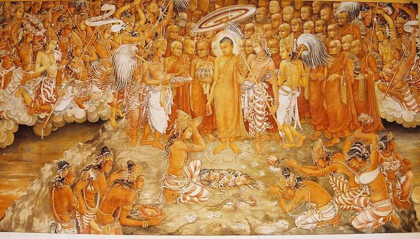

Culture of Sri Lanka

The culture of Sri Lanka mixes modern elements with traditional aspects and is known for its regional diversity. Sri Lankan culture has long been influenced by the heritage of Theravada Buddhism passed on from India, and the religion's legacy is particularly strong in Sri Lanka's southern and central regions. South Indian cultural influences are especially pronounced in the northernmost reaches of the country. The history of colonial occupation has also left a mark on Sri Lanka's identity, with Portuguese, Dutch, and British elements having intermingled with various traditional facets of Sri Lankan culture. Additionally, Indonesian culture has also influenced certain aspects of Sri Lankan culture. Culturally, Sri Lanka, particularly the Sinhalese people, possesses strong links to both India and Southeast Asia.
The country has a rich artistic tradition, with distinct creative forms that encompass music, dance, and the visual arts. Sri Lankan culture is internationally associated with cricket, a distinct cuisine, an indigenous holistic medicine practice, religious iconography such as the Buddhist flag, and exports such as tea, cinnamon, and gemstones, as well as a robust tourism industry. Sri Lanka has longstanding ties with the Indian subcontinent that can be traced back to prehistory. Sri Lanka's population is predominantly Sinhalese with sizable Sri Lankan Moor, Sri Lankan Tamil, Indian Tamil, Sri Lankan Malay and Burgher minorities.
History

Sri Lanka has a documented history of over 2,000 years, mainly due to ancient historic scriptures like Mahawamsa, and with the first stone objects dating back to 500,000 BC. Several centuries of intermittent foreign influence has transformed Sri Lankan culture to its present form. Nevertheless, the ancient traditions and festivals are still celebrated on the island, together with other minorities that make up the Sri Lankan identity.
One very important aspect that differentiates Sri Lankan history is its view on women. Women and men in Sri Lanka have been viewed equal for thousands of years from ruling the country to how they dress. Both men and women had the chance to rule the land (Which is true for even today. The world's first female prime minister, Sirimavo Bandaranaike, was from Sri Lanka.
Even though clothing today is very much westernized and modest dressing has become the norm for everyone, ancient drawings and carvings such as 'Sigiriya art', Isurumuniya Lovers show how the pre-colonial Sri Lankans used to dress, which shows identical amount of clothing and status for men and women.
Art and Crafts

Many forms of Sri Lankan arts and crafts take inspiration from the Island's long and lasting Buddhist culture which in turn has absorbed and adopted countless regional and local traditions. In most instances Sri Lankan art originates from religious beliefs, and is represented in many forms such as painting, sculpture, and architecture. One of the most notable aspects of Sri Lankan art are caves and temple paintings, such as the frescoes found at Sigiriya, and religious paintings found in temples in Dambulla and Temple of the Tooth Relic in Kandy.
Other popular forms of art have been influenced by both natives as well as foreign settlers. For example, traditional wooden handicrafts and clay pottery are found around the hilly regions while Portuguese-inspired lacework and Indonesian-inspired Batik are also notable.